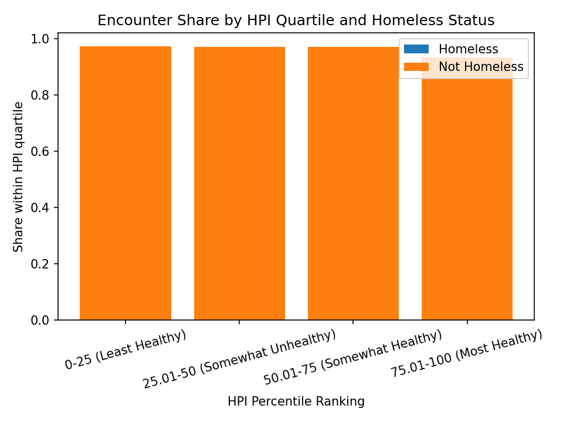
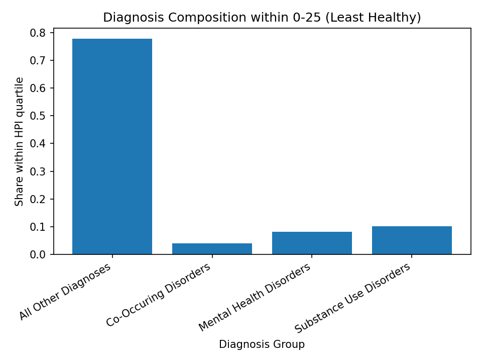
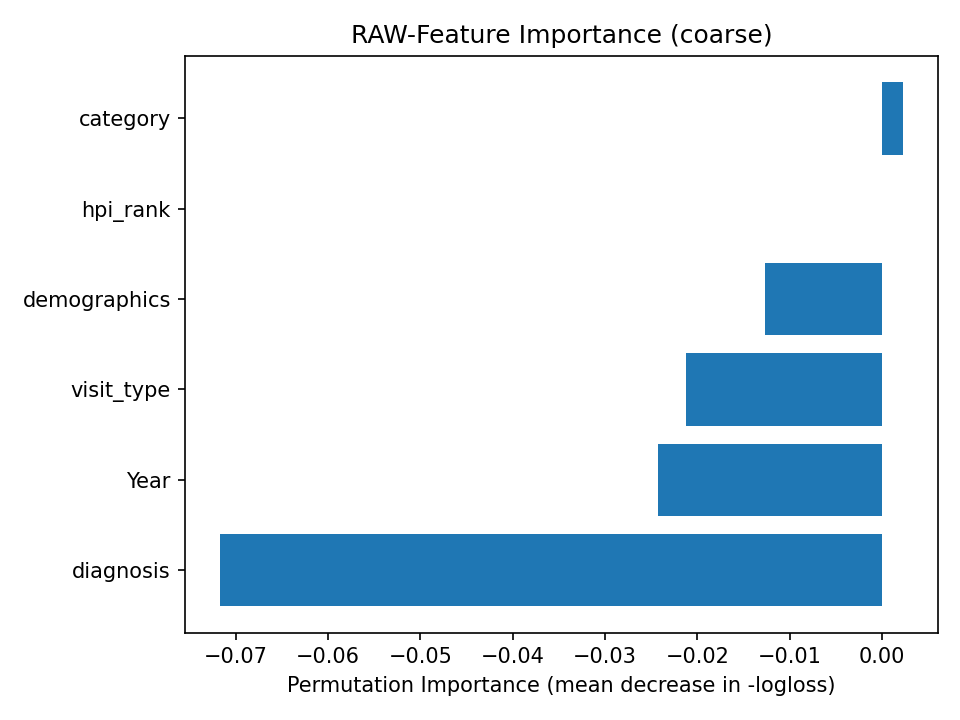

Decisions and Takeaways
I scoped this project as a clear learning exercise: clean preprocessing, dummy coding of categoricals, a transparent logistic regression baseline, and careful evaluation with class imbalance. I documented errors and fixes, including scorer positive-label issues during importance scoring, sparse→dense matrix needs, and a Matplotlib backend warning on Windows. For interpretability in version 1, I use logistic regression coefficients and a coarse raw-feature importance view.
Project Overview
This project explores encounter data summarized by Healthy Places Index (HPI) quartiles and predicts whether
an encounter is associated with homelessness. It includes exploratory data analysis (EDA) and a logistic regression
classifier trained with dummy-coded inputs. I structured the code as a reproducible pipeline in src/,
with data artifacts in data/ and figures in img/.
Source data: California HPI encounter summary dataset (counts). Because rows are aggregated counts, the model uses
num_visits as sample weights to respect group sizes. I kept the Year column for context and focused
on demographic categories (Sex, Race/Ethnicity Group, Age Group) plus encounter setting, diagnosis group, and HPI quartiles.
Step-by-Step (Numbered Guide)
1. Prepare Data (dummy coding ready)
What: Rename columns, cast categoricals, keep Year, filter to Sex/Race–Ethnicity/Age, save Parquet.
Reasoning: Keep temporal context; avoid dropping useful fields early; Parquet is fast for iteration.

2. EDA: Disparities
What: Summarize and visualize HPI x homelessness; diagnosis composition by HPI; per-visit-type comparisons.
Reasoning: Proportions make quartiles comparable and highlight disparities independent of absolute counts.

3. Build the Baseline Classifier
What: Logistic regression pipeline with dummy coding and class_weight="balanced".
Reasoning: Transparent baseline; avoids data leakage; balanced weights mitigate class imbalance.
4. Evaluate and Tune Threshold
What: Report default metrics; use precision–recall to choose a threshold. In my run, a threshold ≈ 0.078 achieved recall ≈ 0.96 for the Homeless class.
Trade-off: Higher recall increases false positives (lower precision). This is acceptable for a screening/flagging use case.
5. Interpretations (current phase of project)
What: Use logistic regression coefficients and a coarse raw-feature importance chart.
Reasoning: Coefficients are robust and avoid scorer label issues. Raw-feature importance answers “does diagnosis matter?” even if not “which diagnosis matters most?”

6. Errors & Fixes
- pos_label errors: importance scorers needed a positive class; string labels caused 'pos_label=1' issues. Solution for v1: rely on coefficients and coarse raw-feature importance.
- Sparse→dense: dummy coding outputs sparse matrices; some functions require dense arrays.
- Matplotlib backend on Windows: set
matplotlib.use("Agg")in scripts.
7. Next Steps
- Granular “which diagnosis matters most?” using coefficients on dummy-coded features or SHAP on a tree model.
- Publish precision–recall curves and confusion matrices (default vs tuned) as additional figures.
- Consider subgroup performance checks by HPI quartile.